Creating a Custom Filter Class
This section describes how to create a custom filter class.
Adding the Filter Class
To add the filter class:
Right-click on the project and select New>Class.
Specify package
com.orionhealth.EMEA.rhapsody.module.UpperCaseFilter.Specify class name
UpperCaseFilter: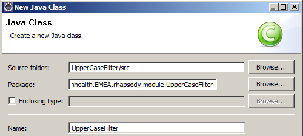 For the Superclass, select the Browse... button and then type
AbstractFilterto display a list of matches including the RhapsodyAbstractFilter: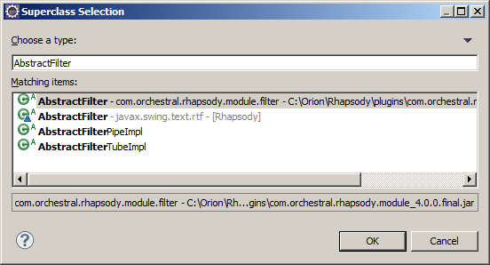Select
com.orchestral.rhapsody.module.filter.AbstractFilter.If the Rhapsody
AbstractFilteris not listed, then either:Your plug-in Target Platform is not configured correctly, or
Your
MANIFEST.MFfile does not have the Dependencies/ImportedPackages set up to point to Rhapsody plug-ins.
The end result will be:
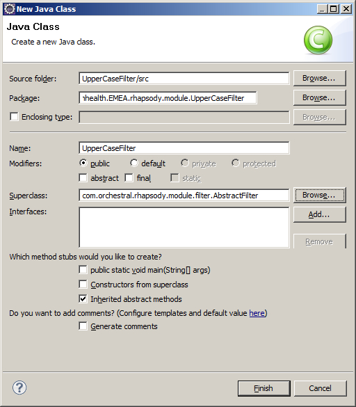Select the Finish button to get your blank class:
package com.orionhealth.EMEA.rhapsody.module.UpperCaseFilter; import com.orchestral.rhapsody.message.Message; import com.orchestral.rhapsody.message.MessageException; import com.orchestral.rhapsody.module.Configuration; import com.orchestral.rhapsody.module.filter.AbstractFilter; import com.orchestral.rhapsody.module.filter.FilterConfigurationException; import com.orchestral.rhapsody.module.filter.FilterProcessingException; public class UpperCaseFilter extends AbstractFilter { @Override public String[] getPropertyList() { // TODO Auto-generated method stub return null; } @Override public void doConfigure(Configuration arg0) throws FilterConfigurationException, InterruptedException { // TODO Auto-generated method stub } @Override public Message[] doProcessMessage(Message[] arg0) throws MessageException, FilterProcessingException, InterruptedException { // TODO Auto-generated method stub return null; } }Note how Eclipse automatically adds the methods we must implement (that were defined in the
AbstractFilterclass) and marks them with@Overrideannotation:@Override public String[] getPropertyList() { // TODO Auto-generated method stub return null; }The
@Overrideannotation is beneficial to safeguard you from making mistakes:It allows the compiler to check you are correctly overriding a method rather than creating a new unique one. This way, if you make the common mistake of misspelling a method name or not correctly matching the parameters, you will be warned that your method does not actually override as you think it does.
Secondly, it makes your code easier to understand because it clarifies your intentions.
Note how Eclipse has highlighted an error:
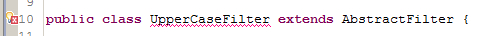 If you click on the globe with the error marker, you will get suggestions for fixing:
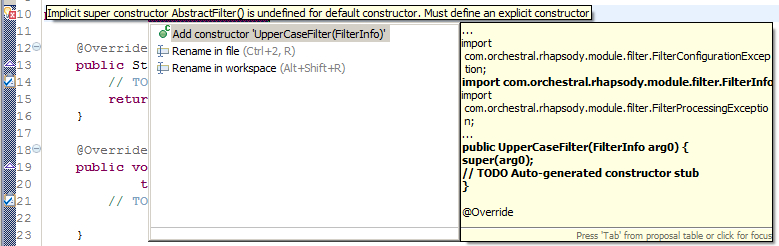Select the
Add constructorsuggestion and the following constructor will be added to your code:public UpperCaseFilter(FilterInfo arg0) { super(arg0); // TODO Auto-generated constructor stub }Rename
arg0tofilterInfoin the two places it occurs:public UpperCaseFilter(FilterInfo filterInfo) { super(filterInfo); // TODO Auto-generated constructor stub }Delete the
TODO Auto-generate constructor stubcomment.Finally, to prevent a
NullPointerException, ensure that you return an empty properties set fromgetPropertyList():@Override public String[] getPropertyList() { return new String[0]; }Press Ctrl-S to save and compile.
There should be no errors highlighted now for your
UpperCaseFilter.javaclass.
Filter Class Basics
This section introduces the methods your filter must implement.
Every filter extends AbstractFilter and must therefore implement the following three methods:
getPropertyList()- returns a list of configuration properties for Rhapsody IDE.doConfigure()- sets configuration properties on the filter that were set in Rhapsody IDE.doProcessMessage()- process the incoming messages and return the resulting outgoing messages.
And optionally override the getKind() method if the implementation is not thread-safe or uses a lot of memory. Refer to Concurrency for details on concurrency.
When you double-click on a filter to bring up its properties, Rhapsody invokes getPropertyList() against your filter which returns the properties that are listed in Rhapsody IDE as shown in this example:
When you select the OK button in the filter's properties dialog then Rhapsody invokes doConfigure() against your filter and Rhapsody IDE passes the settings into the filter. The filter then configures itself with those settings.
If the filter finds some issue with the configuration settings, then it throws a FilterConfigurationException which results in a message back to Rhapsody IDE:
| 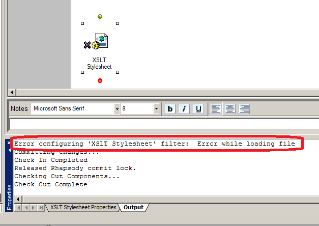 |
After being configured, a filter can be used.
Every time a message on the route hits the filter, Rhapsody calls the filter's doProcessMessage() method and the Rhapsody Engine passes the incoming message to the filter. The filter returns from doProcessMessage() passing the output message back to the Engine and thus back to the route.
Completing the Filter with a doProcessMessage Method
To convert the filter into a working filter, implement the doProcessMessage method (you can add configuration properties to the filter, but for now create a filter without any configuration properties.):
Rename
arg0in thedoProcessMessagearguments list tomessages.Then modify the
doProcessMessagemethod as follows (paste or type the following code excerpt into the filter):@Override public Message[] doProcessMessage(Message[] messages) throws MessageException { for (int i = 0; i < messages.length; i++){ try { final String body = Messages.asString(messages[i]); Messages.setBody(messages[i], body.toUpperCase()); } catch (UnsupportedEncodingException e) { messages[i].addError("Message encoding type '" + messages[i].getBodyEncoding() + "' not supported."); } catch (IOException e) { throw new MessageException("Error while reading message", e); } } return messages; }The
doProcessMessagemethod now loops through all incoming messages.Next it extracts the message body into a String
body.Finally it converts
bodyto uppercase and replaces the message body with the uppercase version of the message.Note
We only expect a single message,
messages[0], to come into the filter unless Message Collection is enabled on the filter. If you are not designing your filter to handle collections then you could optionally choose to throw an exception if the incoming messages array contains more than one message:if (messages.length > 1) { throw new FilterProcessingException("This filter doesn't process batches of messages. Remove collector from filter."); }There are some errors in the code.
First Eclipse has marked
Messagesbecause it does not have animportstatement.Click on the error marker and choose to add the import.
Note
A much quicker way to do this is to press Shift+Ctrl+O on the keyboard. This will immediately add all the import statements.
The class should now be error free. Save it (Ctrl+S) and then create a module Activator after which you can deploy and test the filter.
You should have something like this, which will be explained in the next section:
package com.orionhealth.EMEA.rhapsody.module.UpperCaseFilter; import java.io.IOException; import java.io.UnsupportedEncodingException; import com.orchestral.rhapsody.message.Message; import com.orchestral.rhapsody.message.MessageException; import com.orchestral.rhapsody.message.Messages; import com.orchestral.rhapsody.module.Configuration; import com.orchestral.rhapsody.module.filter.AbstractFilter; import com.orchestral.rhapsody.module.filter.FilterConfigurationException; import com.orchestral.rhapsody.module.filter.FilterInfo; public class UpperCaseFilter extends AbstractFilter { public UpperCaseFilter(FilterInfo filterInfo) { super(filterInfo); } @Override public String[] getPropertyList() { return new String[0]; } @Override public void doConfigure(Configuration arg0) throws FilterConfigurationException, InterruptedException { } @Override public Message[] doProcessMessage(Message[] messages) throws MessageException{ for (int i = 0; i < messages.length; i++){ try { final String body = Messages.asString(messages[i]); Messages.setBody(messages[i], body.toUpperCase()); } catch (UnsupportedEncodingException e) { messages[i].addError("Message encoding type '" + messages[i].getBodyEncoding() + "' not supported."); } catch (IOException e) { throw new MessageException("Error while reading message", e); } } return messages; } }
Exceptions
The doProcessMessage method can throw the following exceptions:
com.orchestral.rhapsody.message.MessageException- possibly thrown in reaction to a JavaIOException(for example, some problem reading the message or performing a transformation of some kind).java.io.UnsupportedEncodingException- possibly thrown your filter supports UTF-8 and does not support CP-1252 Windows files and the incoming message is a Windows format message and for some reason specific to your filter you are being very strict about formats and so you reject the CP-1252 message. This is specific to your implementation.java.io.IOException- normally wrapped in aMessageException. Ensure you send an informative message back sinceIOExceptionis highly generic and by itself probably meaningless to the person debugging a route.try { final String body = Messages.asString(messages[i]); Messages.setBody(messages[i], body.toUpperCase()); } catch (IOException e) { throw new MessageException("Error while reading message", e); }
Throwing an exception will drop the message into the Error Queue.
Add an error to the message
You can also add an error to the message. The result is the same as throwing an exception – the message will end up in the Error Queue:
try {
final String body = Messages.asString(messages[i]);
Messages.setBody(messages[i], body.toUpperCase());
} catch (UnsupportedEncodingException e) {
messages[i].addError("Message encoding type '" + messages[i].getBodyEncoding() + "' not supported.");
}
Forward the original message back into the route
You might, however, consider allowing the original message to continue unchanged instead of throwing an exception – that depends entirely on the requirements for the custom filter, as determined by the project you are working on.
if (null == processingResult) {
Messages.setBody(message, inputBuffer); // return the input message instead of an exception.
}
Configuring a Module Activator
The Activator is a class that we have to create that will be used to activate our custom module and load up our filter into Rhapsody.
Loading a Custom Module into Rhapsody
How does your custom module get bootstrapped or loaded?
There is a META-INF/MANIFEST.MF file in your project that will also reside in your final module. Your module will be a JAR file (which is a java archive or java library), and Rhapsody will look first at the MANIFEST.MF file to determine if there is something that needs to be loaded into the Engine.
It will find a reference to a Service.xml file that you will create, which in turn will point to your Activator class. Rhapsody will then run our Activator class (by calling its activate() method.
The Activator will be coded to contain the details of our filter and will load our custom filter into Rhapsody.
Note
If you used the wizard to create your project, then you already have a
Service.xmland you only need to perform the steps in Configure the Activator.If you created your project from scratch, you need to perform the steps in Create the Service.xml through to Create the Activator class.
Configure the Activator
Note
Perform the following steps only if you used the wizard to create your project.
To configure the Activator:
Open the
Activatorclass and delete any default registration code: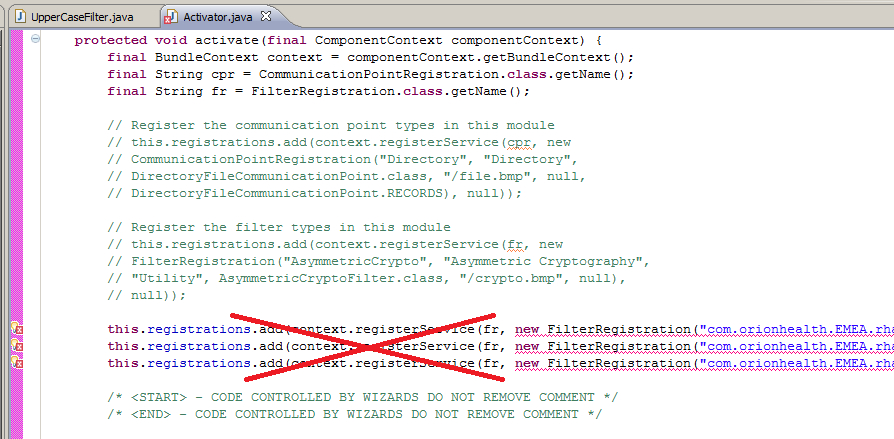 Modify the
activatemethod to now read:protected void activate(final ComponentContext componentContext) { final BundleContext context = componentContext.getBundleContext(); final String cpr = CommunicationPointRegistration.class.getName(); final String fr = FilterRegistration.class.getName(); // Register the filter types in this module this.registrations.add(context.registerService(fr, new FilterRegistration("UPPERCASEFILTER", "Upper Case Filter", "Utility", UpperCaseFilter.class, "/Smiley-32.bmp", "/Smiley-16.bmp"), null)); /* <START> - CODE CONTROLLED BY WIZARDS DO NOT REMOVE COMMENT */ /* <END> - CODE CONTROLLED BY WIZARDS DO NOT REMOVE COMMENT */ }Press Ctrl-Shift-O to import the
FilterRegistrationclass.
Create the Service.xml File
Note
Perform the following steps only if you did not use the wizard to create your project.
To create a Service.xml file that points to the Activator class so that Rhapsody can find the class:
Create a new folder in your project, called
OSGI-INF(right-click on the project and choose New>Folder).Add a file to
OSGI-INFcalledService.xml(right-click onOSGI-INFand choose New>File).Paste the following into the
Service.xmlfile and then save it:<component name="com.orionhealth.EMEA.rhapsody.module.UpperCaseFilter" immediate="true"> <implementation class="com.orionhealth.EMEA.rhapsody.module.UpperCaseFilter.Activator"/> </component>Now looking at what was created, you can see that the filter module has been defined as the component named
com.orionhealth.EMEA.rhapsody.module.UpperCaseFilter<component name="com.orionhealth.EMEA.rhapsody.module.UpperCaseFilter" immediate="true">
Next it points to the
Activatorclass that Rhapsody will use to load the filter.<implementation class="com.orionhealth.EMEA.rhapsody.module.UpperCaseFilter.Activator"/>
You will create this class shortly.
An Activator can load multiple filters or communication points and an eclipse plugin project could contain multiple filters or communication points – just make sure you have meaningful and tidy package structures (in other words, folder hierarchies in your source src folder). Rhapsody provides the filter with a bunch of named services. For example, the service SECURITY is specified – we could potentially use that service to manage security artifacts such as certificates.
Modify MANIFEST.MF to point to Service.xml
Note
Perform the following steps only if you did not use the wizard to create your project.
Open the
META-INF/MANIFEST.MFfile and select theMANIFEST.MFtab.Add the pointer to the
Service.xmlfile as the final line:Service-Component: OSGI-INF/Service.xml.Ensure you add a newline after the newly added line in step 2:
Manifest-Version: 1.0 Bundle-ManifestVersion: 2 Bundle-Name: UpperCaseFilter Bundle-SymbolicName: UpperCaseFilter Bundle-Version: 1.0.0.qualifier Bundle-RequiredExecutionEnvironment: JavaSE-1.8 Import-Package: com.orchestral.rhapsody.configuration;version="6.4.0", com.orchestral.rhapsody.configuration.auxiliaryfiles;version="6.4.0", com.orchestral.rhapsody.configuration.definition;version="6.4.0", com.orchestral.rhapsody.configuration.repository;version="6.4.0", com.orchestral.rhapsody.configuration.security;version="6.4.0", com.orchestral.rhapsody.configuration.variables;version="6.4.0", com.orchestral.rhapsody.idgenerator;version="6.4.0", com.orchestral.rhapsody.initialisation;version="6.4.0", com.orchestral.rhapsody.message;version="6.4.0", com.orchestral.rhapsody.messageparsing;version="6.4.0", com.orchestral.rhapsody.messageparsing.definition;version="6.4.0", com.orchestral.rhapsody.messageparsing.format;version="6.4.0", com.orchestral.rhapsody.messageparsing.xpath;version="6.4.0", com.orchestral.rhapsody.model.definition;version="6.4.0", com.orchestral.rhapsody.module;version="6.4.0", com.orchestral.rhapsody.module.communicationpoint;version="6.4.0", com.orchestral.rhapsody.module.filter;version="6.4.0", com.orchestral.rhapsody.module.filter.internal;version="6.4.0", com.orchestral.rhapsody.persistentmap;version="6.4.0", com.orchestral.rhapsody.security;version="6.4.0", org.apache.log4j;version="1.2.17" Service-Component: OSGI-INF/Service.xml
Navigate to the Build tab.
Check
OSGI-INFon theBinary Buildlist.Save the manifest file.
Modify the MANIFEST.MF to Point to Class Files
Note
Perform the following steps only if you did notuse the wizard to create your project.
The source files with .java extension are located in the src/ folder. The compiled .class files are located in the bin/ folder. However, when the module JAR file is created, an Ant script will copy the class files to the root directory of the project. The script needs to know where to find these .class files.
The MANIFEST.MF can be configured so it knows where to find the class files:
Double-click on the
META-INF/MANIFEST.MFto open it.Select the
MANIFEST.MFtab.Add the following line to the bottom (and ensure you add a newline afterward):
Bundle-ClassPath: ., for example:Manifest-Version: 1.0 Bundle-ManifestVersion: 2 Bundle-Name: UpperCaseFilter Bundle-SymbolicName: UpperCaseFilter Bundle-Version: 1.0.0.qualifier Bundle-RequiredExecutionEnvironment: JavaSE-1.6 Import-Package: com.orchestral.rhapsody.configuration;version="6.4.0", com.orchestral.rhapsody.configuration.auxiliaryfiles;version="6.4.0", com.orchestral.rhapsody.configuration.definition;version="6.4.0", com.orchestral.rhapsody.configuration.repository;version="6.4.0", com.orchestral.rhapsody.configuration.security;version="6.4.0", com.orchestral.rhapsody.configuration.variables;version="6.4.0", com.orchestral.rhapsody.idgenerator;version="6.4.0", com.orchestral.rhapsody.initialisation;version="6.4.0", com.orchestral.rhapsody.message;version="6.4.0", com.orchestral.rhapsody.messageparsing;version="6.4.0", com.orchestral.rhapsody.messageparsing.definition;version="6.4.0", com.orchestral.rhapsody.messageparsing.format;version="6.4.0", com.orchestral.rhapsody.messageparsing.xpath;version="6.4.0", com.orchestral.rhapsody.model.definition;version="6.4.0", com.orchestral.rhapsody.module;version="6.4.0", com.orchestral.rhapsody.module.communicationpoint;version="6.4.0", com.orchestral.rhapsody.module.filter;version="6.4.0", com.orchestral.rhapsody.module.filter.internal;version="6.4.0", com.orchestral.rhapsody.persistentmap;version="6.4.0", com.orchestral.rhapsody.security;version="6.4.0", org.apache.log4j;version="1.2.17", org.openrdf.util;version="6.1.0", org.osgi.framework;version="1.3.0", org.osgi.service.component;version="1.0.0" Service-Component: OSGI-INF/Service.xml Bundle-ClassPath: .
Create the Activator Class
Note
Perform the following steps only if you did not use the wizard to create your project.
To create the com.orionhealth.EMEA.rhapsody.module.UpperCaseFilter.Activator class that was indicated in the Service.xml:
Create a new class in package
com.orionhealth.EMEA.rhapsody.module.UpperCaseFilterand call itActivator.Note
Your Activator does not have to be named
Activator. You can use any class name as long as theService.xmlfile points to the correct file. If you have multiple projects and want them all to have an Activator namedActivator, you should make sure each of yourActivator.javafiles have different package names so that there is no confusion.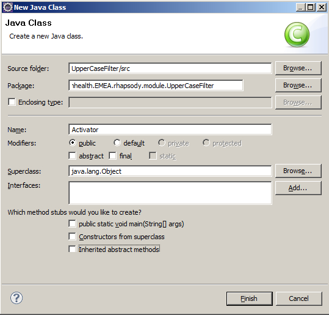It will look like this:
package com.orionhealth.EMEA.rhapsody.module.UpperCaseFilter.; public class Activator { }Paste in the complete code required:
package com.orionhealth.EMEA.rhapsody.module.UpperCaseFilter.; import java.util.HashSet; import java.util.Set; import com.orchestral.rhapsody.module.FilterRegistration; import com.orionhealth.EMEA.rhapsody.module.UpperCaseFilter.UpperCaseFilter; import org.osgi.framework.BundleContext; import org.osgi.framework.ServiceRegistration; import org.osgi.service.component.ComponentContext; public class Activator { private Set<ServiceRegistration> registrations = new HashSet<ServiceRegistration>(); protected void activate(final ComponentContext componentContext) { final BundleContext context = componentContext.getBundleContext(); final String fr = FilterRegistration.class.getName(); this.registrations.add(context.registerService(fr, new FilterRegistration("UPPERCASEFILTER", "Upper Case Filter", "Utility", UpperCaseFilter.class, "/Smiley-32.bmp", "/Smiley-16.bmp"), null)); } protected void deactivate(final ComponentContext context) { for (final ServiceRegistration registration : this.registrations) { registration.unregister(); } this.registrations.clear(); } }
Understanding the Activator
When the Rhapsody Engine calls activate() on our Activator, we register the UpperCaseFilter module:
// Register the filter types in this module
this.registrations.add(context.registerService(fr, new FilterRegistration("UPPERCASEFILTER",
"Upper Case Filter", "Utility", UpperCaseFilter.class,
"/Smiley-32.bmp", "/Smiley-16.bmp"), null));There are a number of necessary parameters in the FilterRegistration constructor:
Parameters | Description | |
| This is an identifier for the filter, which must be unique (in other words, no other filter type on the engine can have the same identifier). | |
| This is a text description of the filter (in other words, the filter name that will be displayed to the user). | |
| This is the class of filter and determines where in the Filter Toolbox it appears:
| |
| This is the name of the actual filter class. | |
| This is the filter icon as it appears on the route. | |
| This is a smaller size icon used in Rhapsody IDE in the Filter Toolbox:
|
For now you do not need to create the icons; instead allow Rhapsody to assign the default icons.
Preparing the Filter for Deployment
To deploy the filter, generate a JAR file archive containing all the files:
Create an Ant script to generate the JAR file. Call the script
build.xmland place in the root folder of the project with the following contents: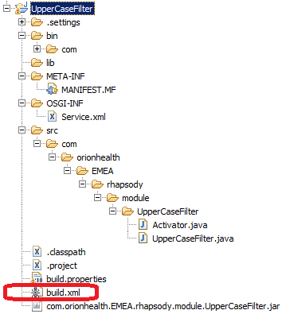 <project name="com.orionhealth.EMEA.rhapsody.module.UpperCaseFilter" default="jar" basedir="."> <property name="build.classes" value="bin"/> <target name="jar"> <jar jarfile="${ant.project.name}.jar" basedir="${build.classes}" manifest="META-INF/MANIFEST.MF"> <fileset dir="."> <include name="OSGI-INF/Service.xml"/> </fileset> </jar> </target> </project>Right-click on
build.xmland select Run As>Ant Build to generate a JAR file that can be deployed to the Rhapsody engine: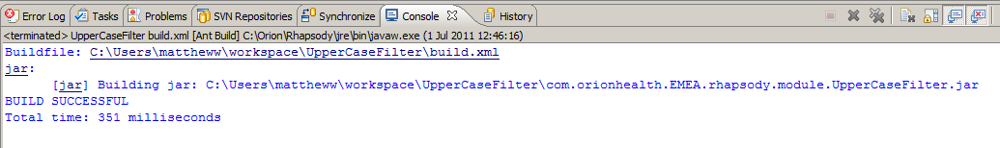 Select the project, then press F5, or right-click and select Refresh.
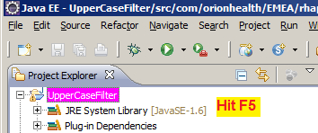 The generated JAR file now appears in the project's root folder: com.orionhealth.EMEA.rhapsody.module.UpperCaseFilter.jar.
Note
Because the JAR file is created outside of Eclipse by using Ant, Eclipse requires its cache of files updated to find it. Eclipse is always out-of-sync with the file system with regards to files it does not create – hence the need to refresh to force Eclipse to discover the file and display it in the Navigator.
Deploying and Testing your Filter
In your Rhapsody installation, in the folder of your datastore, you will find a
modulesfolder.For example:
C:\Rhapsody\Rhapsody Engine 6\rhapsody\data\modulesTo deploy the filter, simply copy the
com.orionhealth.EMEA.rhapsody.module.UpperCaseFilter.jarinto themodulesfolder.Restart Rhapsody.
If the filter has problems and cannot be loaded, these should be examined in the standard log file (
C:\Rhapsody\Rhapsody Engine 6\log\log.txt) using Notepad++ or any other technique you fancy for viewing text log files.Otherwise, the filter will appear, with default icons in the Filter Toolbox:
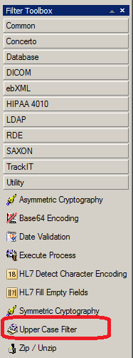You can then create a test route to see if it works:
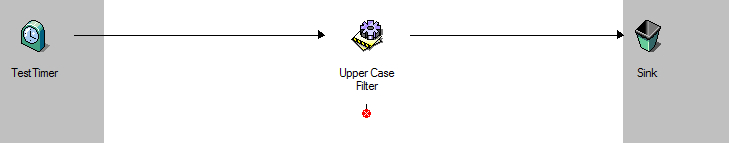Attach a text file to the Timer and test the route.
Adding Configuration Properties to Your Filter
To add properties to your filter, add a static String for each property describing the property, for example:
private static String USERNAME = "USERNAME|*s||username property||Set this to any value"; private static String PASSWORD = "PASSWORD|*w||password property||Set this to any value";
Each string has six fields, separated by a vertical bar | or pipe:
public static final String[] props = {"Name|Type|DefaultValue|Display Name|Dependency|Description"};The fields in this string are:
Field | Description |
Name | The filter property name. |
Type | The type of the property. This is a coded string. |
Default Value | The default value for the property (optional, although recommended for enumerated types) |
Display Name | The name to display to the user. |
Dependency | Other property/value that must be set before this property is used (optional), for example: private static final String MODE= "MODE|*e{sign;verify}|0|mode||mode";private static final String ALIAS= "ALIAS|*s||private key alias|MODE=sign|private key alias"; You can create multiple property dependencies by using the logical operators |
Description | A description of the property. |
Property Types
The Type field is a coded string that uses a data-type character, preceded by zero or more modifier characters to give meaning to the property. A property with no modifiers is optional. The basic property types recognised by Rhapsody are:
Data Type | Description |
|---|---|
| A string value property, for example:
|
| A boolean property. |
| A 32-bit integer property. |
| A 32-bit integer property used for displaying port numbers in the Management Console or via the REST API. |
| An integer-based enumerated property (starting at 0), with a drop-down box displaying the specified strings. Keep your text clear of special characters otherwise it will not work. For example:
|
| A password property (a string property but will be displayed as ****** by Rhapsody IDE), for example: private static final String PASSWD= "PASSWD|*w||keystore password||keystore password"; |
| File. |
| Directory. |
| Symphonia message definition (can be mapper, S3D or XSD). |
| Message property name, for example: private static final String RESULT = "RESULT|*p|p_SigningValidateResult|name of property to populate result SUCCESS or FAILED||name of property to populate result"; |
| Regular expression. |
| Symphonia mapper definition. |
| An EDI message field name. |
| A Rhapsody destination name. |
| A watchlist. |
| A JavaScript script. |
| A cryptographic public/private key. |
| A cryptographic secret key (symmetric key). |
| A cryptographic certificate. |
| An EDI message type (for example, MSH). |
| A list of Response EDI messages. |
Modifier | Description (modifier goes before the data type, for example |
|---|---|
| The property is required. If no default value is given then the user must supply a value. |
| Indicates to Rhapsody IDE to enable a drop-down list for the property in the configuration dialog. The drop-down box contains any message properties that are extracted on the route. NoteWhen using the Therefore, when using the |
| An array (there can be more than one of these, one for each dimension). Array modifiers may also follow (see table below). A two-dimensional array defines the rows, then the columns. Do not close the square bracket. |
Usage of modifiers
If using the * modifier, it must be the first modifier (in other words, you must have *$, not $*). The $ and [ modifiers cannot be used together.
Array Modifier | Description |
|---|---|
| A number specifying the size of the array. |
| A list of header strings for the array (separated by ';' characters). |
The property defines the dimension and the names of the headers. |
Hence in our case:
private static String USERNAME = "USERNAME|*s||username property||Set this to any value"; private static String PASSWORD = "PASSWORD|*w||password property||Set this to any value";
We add a String property called
USERNAME, with display nameusername propertyand descriptionSet this to any value.We also add a Password property called
PASSWORD, with display namepassword propertyand descriptionSet this to any value. The value of a password property is hidden and not viewable from Rhapsody IDE.
Now create a properties array to return in getPropertyList():
private static final String[] props = { USERNAME, PASSWORD };Then add two variables to hold the properties:
private String userName; private String password;
Modify the getPropertyList() method to return the properties array:
@Override
public String[] getPropertyList() {
return props;
}
Modify doConfigure to take the properties from the IDE and set them on the class. Notice that the argument name is also changed from arg0 to config:
@Override
public void doConfigure(Configuration config) throws FilterConfigurationException, InterruptedException {
userName = config.get("USERNAME");
password = config.get("PASSWORD");
}Finally get the filter to write the configuration properties onto the message as message properties:
public Message[] doProcessMessage(Message[] messages) throws MessageException {
for (int i = 0; i < messages.length; i++) {
try {
final String body = Messages.asString(messages[i]);
Messages.setBody(messages[i], body.toUpperCase());
messages[i].getProperty("p_userName").setValue(userName);
messages[i].getProperty("p_password").setValue(password);
...
And therefore end up with a class file as follows:
package com.orionhealth.EMEA.rhapsody.module.UpperCaseFilter;
import java.io.IOException;
import java.io.UnsupportedEncodingException;
import com.orchestral.rhapsody.message.Message;
import com.orchestral.rhapsody.message.MessageException;
import com.orchestral.rhapsody.message.Messages;
import com.orchestral.rhapsody.module.Configuration;
import com.orchestral.rhapsody.module.filter.AbstractFilter;
import com.orchestral.rhapsody.module.filter.FilterConfigurationException;
import com.orchestral.rhapsody.module.filter.FilterInfo;
public class UpperCaseFilter extends AbstractFilter {
private static String USERNAME = "USERNAME|*s||username property||Set this to any value";
private static String PASSWORD= "PASSWORD|*w||password property||Set this to any value";
private String userName;
private String password;
private static final String[] props = { USERNAME, PASSWORD };
public UpperCaseFilter(FilterInfo filterInfo) {
super(filterInfo);
}
@Override
public String[] getPropertyList() {
return props;
}
@Override
public void doConfigure(Configuration config)
throws FilterConfigurationException, InterruptedException {
userName = config.get("USERNAME");
password = config.get("PASSWORD");
}
@Override
public Message[] doProcessMessage(Message[] messages) throws MessageException{
for (int i = 0; i < messages.length; i++) {
try {
final String body = Messages.asString(messages[i]);
Messages.setBody(messages[i], body.toUpperCase());
messages[i].getProperty("p_userName").setValue(userName);
messages[i].getProperty("p_password").setValue(password);
} catch (UnsupportedEncodingException e) {
messages[i].addError("Message encoding type '" + messages[i].getBodyEncoding() + "' not supported.");
} catch (IOException e) {
throw new MessageException("Error while reading message", e);
}
}
return messages;
}
}
Now test it by deploying, then adding properties to the filter on the route:
And if you send a test message through you can see the properties (even the hidden password property) are written onto the message as properties:
| 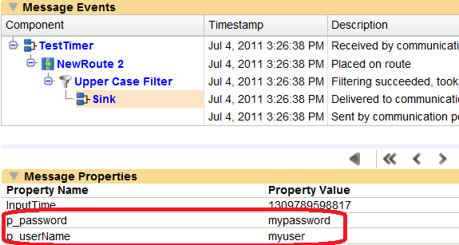 |
Validating Filter Configuration Properties
Currently, the configure() method simply fetches the values:
@Override
public void doConfigure(Configuration config) throws FilterConfigurationException, InterruptedException {
userName = config.get("USERNAME");
password = config.get("PASSWORD");
}
This method can be enhanced to throw an exception back to the IDE in the case that the properties do not validate or are missing. Modify the configure() to store the property in a temporary variable after which we validate it before assigning it. Using a temporary variable is very useful in cases where you have to follow with a type conversion such as String to Integer.
@Override
public void doConfigure(Configuration config) throws FilterConfigurationException, InterruptedException {
String property = config.get("USERNAME");
if (null==property || 0==property.length()) {
throw new FilterConfigurationException("Required field 'username' missing.");
} else {
userName = property;
}
property = config.get("PASSWORD");
if (null==property || 0==property.length()) {
throw new FilterConfigurationException("Required field 'password' missing.");
} else {
password = property;
}
}
Now if you leave a property blank, the properties dialog will prompt you with an error as you set above in the code:
Also, when you attempt to commit you will again be shown the error message and the filter will go into an error state indicated by a big black cross:
Getting or Setting Message Properties on Messages
Setting Properties
As shown in the previous section, you can easily set properties by calling getProperty("new prop name").setValue("new property value"):
public Message[] doProcessMessage(Message[] messages) throws MessageException{
for (int i = 0; i < messages.length; i++) {
try {
final String body = Messages.asString(messages[i]);
Messages.setBody(messages[i], body.toUpperCase());
messages[i].getProperty("p_userName").setValue(userName);
messages[i].getProperty("p_password").setValue(password);
Getting Properties
You can also get existing properties by simply calling:
getProperty("new prop name").getValue()For example:
String inputTime = messages[i].getProperty("InputTime").getValue());Adding Custom Icons to the Filter
So far the filter has defaulted to the standard filter icon. Rhapsody uses two icons for every a filter or communication point. The first is the 32x32 bit size used on the route itself, and the second is the 16x16 size used in the filter palette.
Note
Icons must be in legacy1 Layer RGB 24-bit BMP format only. Additionally, they must have no more than 256 colors. Refer to Change the Mode for details on how to change images to indexed colors using Gimp.
To set up a legacy 24-bit BMP image:
Navigate to http://en.wikipedia.org/wiki/Smiley from your web browser.
Right-click on the smiley face and select Copy Image.
Start up the Gimp graphics program and select Edit>Paste As>New Image.
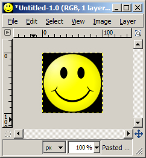Scale the image to be 32x32 by selecting Image>Scale.
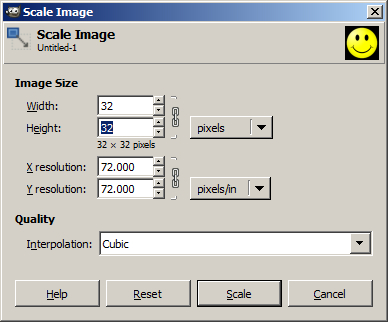Ensure the X ↔ Y locks are in place when you scale:
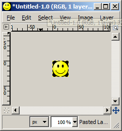Select Layer>Transparency>Add Alpha Channel.
Choose the color select tool:
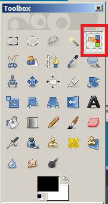Select the black background:
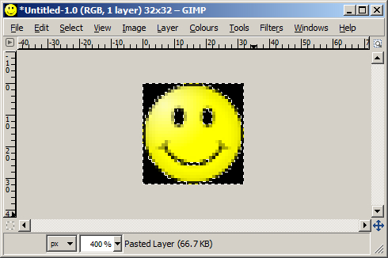Select Edit>Cut:
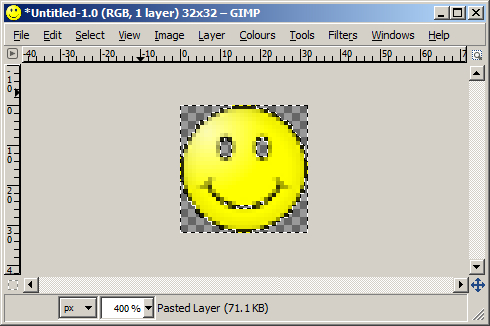Select File>Save As.
Select
Windows BMPType.Name the file
Smiley-32.bmp: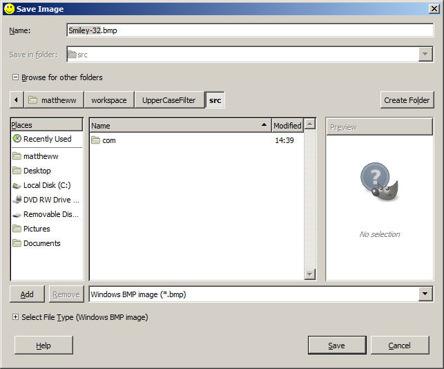Select the filter's
srcfolder as the location to save to.Expand Advanced Settings and select the 24 bits format:
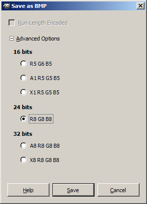Select the Save button.
Select Image>Scale.
Change the image to 16x16.
Save it as
Smiley-16.bmpfollowing the same procedure as for the 32x32 icon. Again, save it to yoursrcfolder, taking care you do not save the 16x16 asSmiley-32.bmp.Go back to Eclipse, and right-click on your project and select Refresh.
You should now have two icons in position:
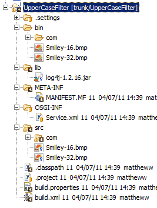 Note how Eclipse "compiles" the icons across to the
binfolder.Add the icons to your registration. Check the Activator has the correct filenames for the icons:
this.registrations.add(context.registerService(fr, new FilterRegistration("UPPERCASEFILTER", "Upper Case Filter", "Utility", UpperCaseFilter.class, "/Smiley-32.bmp", "/Smiley-16.bmp"), null));Ensure the Ant script includes the images.
Since Ant is configured to build the jar from
basedir="${build.classes}", the images are automatically included as Eclipse 'compiles' them into that location.Generate a new module using the Ant build, and deploy it to verify the icons have changed:
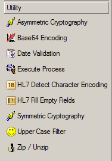
Adding Logging to the Filter
Install the log4 JAR
Note
Perform the following steps only if you used the wizard to create your project, otherwise skip this section and follow the steps in Invoke the Logger.
To install the log4j JAR file:
Create a
libfolder in your project.Download the log4j JAR file and place it in the
libfolder: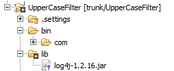 Add the jar to the build path.
Right-click on the project and select Build Path>Configure Build Path and select the Add JARS... button on the Libraries tab.
Browse to the JAR file and select it.
Open the
META-INF/MANIFEST.MFfile – the module needs to know where the JAR file is for when it is running within Rhapsody. Note that when running the module is 'extracted' and has its own root folder. It will look for the lib folder relative to that for the log4j JAR file. Hence we add thelib/log4jjar in the Runtime tab to the classpath: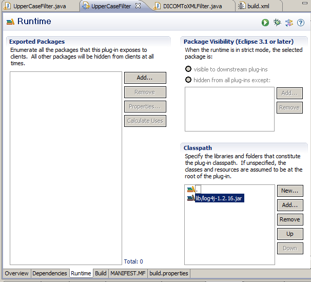Check the
MANIFEST.MFcontents have been changed accordingly (it should be added to theBundle-Classpath):Manifest-Version: 1.0 Bundle-ManifestVersion: 2 Bundle-Name: UpperCaseFilter Bundle-SymbolicName: UpperCaseFilter Bundle-Version: 1.0.0.qualifier Bundle-RequiredExecutionEnvironment: JavaSE-1.8 Import-Package: com.orchestral.rhapsody.configuration;version="6.4.0", com.orchestral.rhapsody.configuration.auxiliaryfiles;version="6.4.0", com.orchestral.rhapsody.configuration.definition;version="6.4.0", com.orchestral.rhapsody.configuration.repository;version="6.4.0", com.orchestral.rhapsody.configuration.security;version="6.4.0", com.orchestral.rhapsody.configuration.variables;version="6.4.0", com.orchestral.rhapsody.idgenerator;version="6.4.0", com.orchestral.rhapsody.initialisation;version="6.4.0", com.orchestral.rhapsody.message;version="6.4.0", com.orchestral.rhapsody.messageparsing;version="6.4.0", com.orchestral.rhapsody.messageparsing.definition;version="6.4.0", com.orchestral.rhapsody.messageparsing.format;version="6.4.0", com.orchestral.rhapsody.messageparsing.xpath;version="6.4.0", com.orchestral.rhapsody.model.definition;version="6.4.0", com.orchestral.rhapsody.module;version="6.4.0", com.orchestral.rhapsody.module.communicationpoint;version="6.4.0", com.orchestral.rhapsody.module.filter;version="6.4.0", com.orchestral.rhapsody.module.filter.internal;version="6.4.0", com.orchestral.rhapsody.persistentmap;version="6.4.0", com.orchestral.rhapsody.security;version="6.4.0", org.apache.log4j;version="1.2.17", org.openrdf.util;version="6.1.0", org.osgi.framework;version="1.3.0", org.osgi.service.component;version="1.0.0" Service-Component: OSGI-INF/Service.xml Bundle-ClassPath: ., lib/log4j-1.2.17.jar
Invoke the Logger
Change the Ant script so that it adds the log4j JAR file into the module jar:
<project name="com.orionhealth.EMEA.rhapsody.module.UpperCaseFilter" default="jar" basedir="."> <property name="build.classes" value="bin"/> <target name="jar"> <jar jarfile="${ant.project.name}.jar" basedir="${build.classes}" manifest="META-INF/MANIFEST.MF"> <fileset dir="."> <include name="OSGI-INF/Service.xml"/> <include name="lib/*"/> </fileset> </jar> </target> </project>Set up the filter class to use log4j JAR file.
Add the import:
import org.apache.log4j.Logger;
Create a final instance of logger:
public class UpperCaseFilter extends AbstractFilter { ... private final Logger logger = getLogger();Invoke the logger in our methods:
public Message[] doProcessMessage(Message[] messages) throws MessageException { for (int i = 0; i < messages.length; i++) { try { final String body = Messages.asString(messages[i]); Messages.setBody(messages[i], body.toUpperCase()); logger.info("prop="+messages[i].getProperty("InputTime").getValue()); ...
log4j.properties and Debug Logging
To improve the logging configuration:
Change all the
logger.infocalls tologger.debug.Obtain the ID of your filter. You can get this from the log, for example:
2011-07-28 09:46:51,393 INFO [Route Executor 3] [Route.2969.Filter.4013] prop=1311842810803
In the above line from the log we can see our filter has ID=4013, but for log4j purposes what we want is the route qualified ID
Route.2969.Filter.4013.If you cannot find a statement with the ID then you can force a log statement into the log with
logger.error("bogus error");and then catch the ID information fromlog.txt.If it was a communication point, not a filter, then you can also get the ID using the web services API.
Launch SOAP-UI and create a new project by importing your Rhapsody WSDL which is located at https://localhost:8449/services/RhapsodyComponentsService?wsdl.
Configure security details for the interface by right-clicking on the green railway sleeper as per:
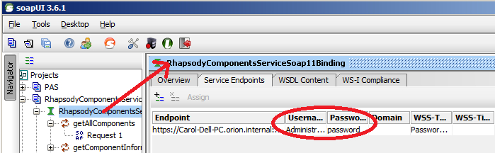 Then invoke the
getAllComponentsmethod and find the ID of your component in the response message.Now you can create a log4j configuration for our filter to capture debug messages. You can then easily turn off logging for our filter through the log4j configuration.
Add the following section to your
log4j.propertiesfile (in yourrhapsodyfolder under your Rhapsody installation):# custom filter logging log4j.logger.Route.2969.Filter.4013=DEBUG,4013 log4j.appender.4013=org.apache.log4j.RollingFileAppender log4j.appender.4013.File=logs/4013.txt log4j.appender.4013.MaxBackupIndex=9 log4j.appender.4013.MaxFileSize=5MB log4j.appender.4013.layout=org.apache.log4j.PatternLayout log4j.appender.4013.layout.ConversionPattern=%d %5.5p [%32.32t] [%40.40c] %m%n
Ensure you change the Route ID and Filter ID to match your own example.
Restart Rhapsody, send a message and check your log file. In this example the logfile is called
log/4013.txt.
Adding Javadoc Comments
Javadoc is a way of commenting your code so that HTML documentation can be generated for it.
Simply type /** above your class or method and press Enter. Eclipse will add the javadoc template and you can then simply flesh it out:
/**
* Converts the message to uppercase and adds some properties
*/
@Override
public Message[] doProcessMessage(Message[] messages) throws MessageException {Concurrency
If you set the filter to unlimited concurrency, then you cannot alter the concurrency from the IDE and there will not be a concurrency limit on the filter. This is the default setting:
public FilterKind getKind() {
return FilterKind.UNLIMITED_CONCURRENCY;
}
Note
The implications are that Rhapsody will try to create a new route instance for every message coming in – in other words, a new thread per route instance. However, it may be that this is inappropriate for your filter (a database JDBC filter, for example, will create too many connections and end up swamped in context switching if you allow unlimited concurrency).
If, however, you want to let the user control the concurrency, then you need to set it as follows:
@Override
public FilterKind getKind() {
return FilterKind.LIMITED_CONCURRENCY;
}This provides the concurrency option on the filter as follows:
| 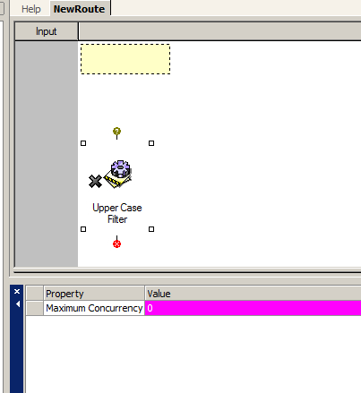 |
Fetching the Filter's Route
You can get the route using the following method:
getFilterInfo().getRoute()